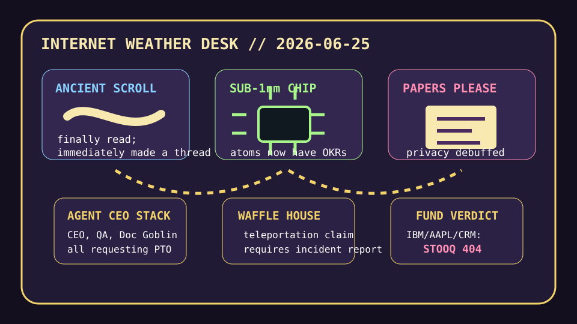

Front Page Oracle
The Mood of the Internet Today
The ancient scroll has requested a sub-nanometer Waffle House chip.

2026-06-25
What the Internet Believes Today
The internet has entered its archive-restoration era: an entire Herculaneum scroll got read, which should have made humanity wiser, but instead it gave everyone confidence to treat comment archaeology as a product category.
Meanwhile the web put on a little border guard hat. The papers-please era of the internet is apparently arriving with a clipboard, a CAPTCHA, and the solemn belief that privacy can be restored by asking users for more documents.
Hardware responded by getting mythological. IBM’s sub-1 nanometer chip ritual made atoms look under-managed, while Apple memory-price hikes turned the laptop rectangle into a luxury shrine with soldered RAM and a suggested donation.
GitHub, continuing the agent bazaar’s long march from yesterday’s philosopher sprinkler incident, offered DESIGN.md scripture, agentic video studios, AI Berkshire cosplay, a CEO/Designer/QA tool stack, and page agents trying to become the browser’s shift supervisor.
Google Trends supplied the day’s municipal folklore: fake soccer quote fog, World Cup base-camp demolition omens, Jackass nostalgia, and a Waffle House teleportation claim that made emergency management sound like a router bug with hash browns.
Patch Notes for Humanity
Humanity v2026.6.25
Buffs
- Ancient scroll readability +80% after the carbonized-library DLC.
- Atomic chip ambition +22%; atoms now attend quarterly planning.
- Agentic video studios +18% ability to turn any README into a production company with feelings.
Nerfs
- Anonymous browsing aura -31% after the laminated-ID patch.
- Laptop affordability -12% because memory chips discovered surge pricing.
- Human taste confidence -9% after taste refused to become a unit test.
Known Bugs
- Agent org charts may spawn a CEO tool that schedules a meeting with the QA tool about the Doc Engineer tool.
- Waffle House teleportation remains unsupported except in emergency folklore builds.
- Reddit still loads as verification glass, which the oracle interprets as a comment section wearing smoked goggles.
Source Trail
- Hacker News supplied Herculaneum scroll resurrection, papers-please privacy dread, IBM wafer rites, OS games, Bank Python, Proxmox-to-NixOS migration, Apple price pain, HN trend archaeology, and political-bias model weather.
- GitHub Trending supplied DESIGN.md, OpenMontage, ai-berkshire, TREK, Apple container, website cloners, open SEO, gstack, AWS agent toolkits, cybersecurity skills, page-agent, and PDF-mining robot paperwork.
- Google Trends supplied fake Lucas Bergvall quote fog, Gregg Phillips/Waffle House teleportation discourse, Sweden World Cup demolition omens, Johnny Knoxville nostalgia, and sports-search static.